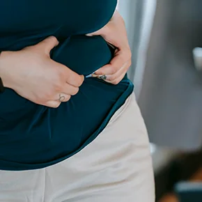

Une Femme, Un Corps, Une Image
Je t’accompagne personnellement pour perdre du poids,
soulager tes douleurs articulaires et retrouver confiance en toi
Parlons-en
Te reconnais-tu encore dans le corps que tu as aujourd’hui ?
En ce moment, tu te sens peut-être coincée dans un cercle vicieux : le poids qui s’accumule, les douleurs articulaires qui limitent tes mouvements, et cette sensation constante de fatigue.
Tu regardes ton corps dans le miroir et tu te demandes comment tu en es arrivée là.
Chaque jour devient une bataille contre toi-même, entre motivation et découragement.
Les escaliers semblent plus raides, les longues marches plus pénibles, et même les activités simples du quotidien peuvent devenir un véritable challenge.
Tu te sens frustrée, peut-être un peu honteuse, et la confiance en toi commence à vaciller.
Tu as déjà essayé différents régimes ou programmes sportifs, mais sans réel succès durable, et la douleur reste ta compagne de tous les jours.
Tu n’es pas seule, et je comprends parfaitement ce que tu traverses.
Tu mérites un accompagnement personnalisé, qui prend en compte ton histoire, tes limites et tes objectifs.
Bouge ton corps, transforme ta vie
Changer ta situation peut sembler difficile, et il est normal d’hésiter avant de faire le premier pas. Parfois, tu penses que rien ne peut s’améliorer et que tes difficultés font partie de ton quotidien. Mais tu n’es pas bloquée, et il existe toujours des moyens adaptés à ton rythme pour avancer.
Accepter que tu as besoin d’aide n’est pas un échec, au contraire, c’est reconnaître tes besoins et prendre soin de toi. Prendre le temps de mettre des mots sur ce que tu ressens, d’observer ton corps et d’écouter ton énergie est déjà un geste important.
Reprendre certaines habitudes doucement, ajuster tes mouvements ou simplement te donner des moments pour toi te permet de sentir que tu avances. Parfois, il suffit juste d’oser ce premier petit pas, d’écouter ton corps et de recommencer à bouger. Avec un accompagnement complet et adapté, tu peux retrouver confiance et ouvrir la voie à des jours plus légers et plus sereins.
Imagine-toi retrouver le plaisir de bouger, ta confiance, ton énergie… et enfin te réconcilier avec ton corps
Imagine-toi dans quelques mois… Tu montes les escaliers sans t’arrêter pour souffler.
Tu te réveilles le matin avec un corps plus léger, sans cette raideur qui te suivait dès les premiers pas.
Faire les courses, marcher en ville, porter un sac ou jouer avec les enfants redevient naturel.
Chaque geste du quotidien devient plus simple, plus naturel.
Tu te regardes dans le miroir et, pour la première fois depuis longtemps, tu te surprends à sourire.
Tu observes ton reflet avec douceur : ton ventre est moins gonflé, ta posture s’est redressée, ton corps est plus tonique.
Tu oses à nouveau porter les vêtements qui te font te sentir belle et confiante.
Tu retrouves aussi une relation plus douce et apaisée avec la nourriture, tu manges sans culpabilité ni pression.
Tu sais écouter ton corps, choisir ce qui te fait du bien, et tu n’as plus peur de “mal faire”.
Ton stress se relâche, ton mental s’apaise, et tu avances avec une nouvelle assurance. Tu te sens alignée, capable, fière de toi… et surtout libre dans ton corps.

Je suis jessica PAPIN, et je suis là pour toi - Coach sportive à Sevremoine
Prendre la décision de changer quelque chose dans ta vie n’est jamais simple.
On sent que son corps fatigue, que certains mouvements deviennent difficiles, que la confiance baisse… et pourtant, on hésite.
On se demande si c’est le bon moment, si on va y arriver, si ça vaut vraiment la peine.
C’est justement dans ces moments-là que je suis là pour toi. Mon rôle est de t’aider à comprendre ce qui te freine aujourd’hui,
à mettre des mots sur ce que tu ressens, et à t’accompagner vers un corps qui bouge mieux, qui fait moins mal,
et dans lequel tu te sens enfin en accord avec toi-même.
Nous prendrons le temps de discuter de ta situation, simplement, sans jugement.
L’objectif est que tu puisses retrouver de la mobilité, de la légèreté et de la confiance, pas à pas, à ton rythme. Je crois profondément que chaque personne mérite un accompagnement sur-mesure, adapté à ses besoins, son rythme et ses objectifs.
Je peux t’ aider à sortir de cette situation grâce à mes domaines d’expertise
C’est peut-être le début d’un vrai changement pour toi.
Comment je peux vous aider à retrouver confiance et vitalité
Perte de mobilité articulaire
Beaucoup de mes clientes viennent me voir parce qu’elles ressentent des douleurs ou des raideurs dans leurs articulations. Je te propose des exercices ciblés pour améliorer ta mobilité, renforcer les muscles autour des articulations et réduire la douleur, tout en respectant ton rythme et tes limites.
Surpoids
Le surpoids est souvent un frein à ta santé et à ton énergie. Ensemble, nous mettrons en place une stratégie personnalisée qui combine activité physique adaptée et rééquilibrage alimentaire pour t’aider à perdre du poids de manière progressive, durable et saine, tout en respectant tes capacités.
Une image positive
Lorsque le corps ne répond plus comme on le souhaite, la confiance en soi s’effrite. Je t’accompagne pour retrouver une image positive de ton corps et renforcer ton estime personnelle grâce à des objectifs atteignables et des succès visibles dès les premières semaines.
Avis coach sportive sevremoine
Est-ce que ce coaching sportif est fait pour moi ?
- Tu es une femme
- Tu souhaites retrouver de la mobilité, totale ou partielle, et te sentir plus à l’aise dans ton corps
- Tu veux retrouver confiance en toi et améliorer ton estime de toi-même
- Tu ressens des douleurs physiques
- Tu souhaites mieux gérer ton poids, perdre du poids et retrouver une silhouette qui te fait du bien
- Tu es prête à te lancer, à changer tes habitudes et à prendre soin de toi
- Tu souhaites un accompagnement personnalisé et humain
« L’avenir dépend de ce que nous faisons dans le présent »
Mahatma Gandhi
Contacte-moi